A Box Full of Trouble
It started with that box.
Heather carried it into the living room like a proud parent bringing home a newborn. Sagar followed behind, coffee in hand, wearing the faint smirk of someone who already knew chaos was imminent.
The label on the box read “Wall-E: Smart Autonomous Cleaning Assistant.”
Neet’s pupils shrank to sniper-dot size.
Buddy tilted his head, ears flopping: “Smart? Assistant? Does this mean it brings snacks?”
Heather crouched to slice the tape. “This will keep the floors clean so we don’t have to vacuum as much.”
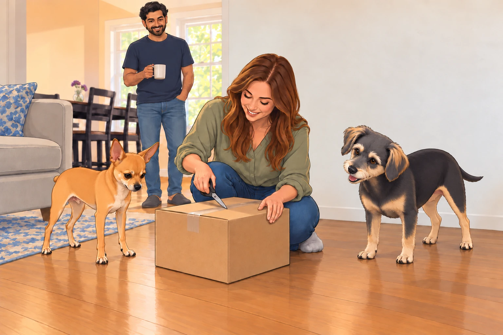
Neet: “Correction. YOU don’t have to vacuum as much. I now have to guard against an automated invader.”
Buddy: “If it’s an invader with treats, I’m okay with it.”
Buddy inspected the empty box. Nothing. He inspected it again from the other end. A smart assistant might have hidden them.
Neet sniffed the round machine from a distance. No legs. No cord. No obvious place to bite an argument into it.
The old vacuum at least announced its intentions by roaring. This one was sitting politely on the rug. Neet distrusted politeness from appliances.
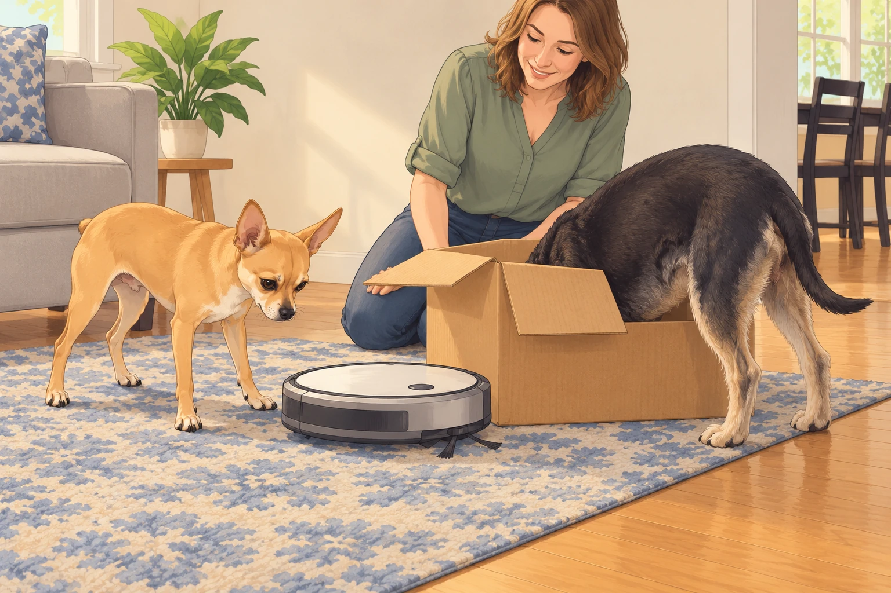
Heather cleared the packing foam and set its dock against the wall. Buddy stationed himself beside her. If she needed somebody to test the snack service, he wanted to be available.
First Contact
Heather pressed the power button. Wall-E came to life with a cheerful bloop and a slow, deliberate pirouette.
Neet immediately dropped into a perimeter stance.
Buddy wagged so hard his back legs scooted.
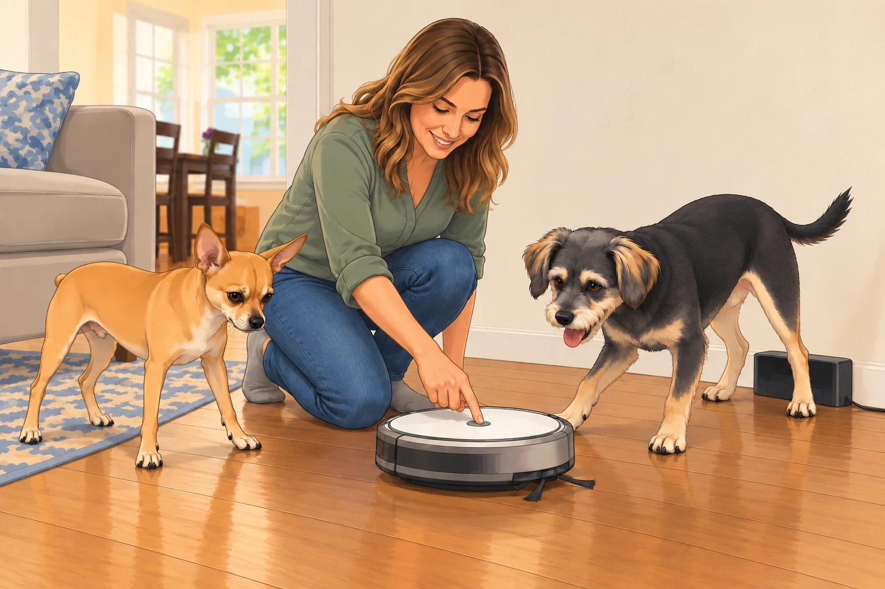
Wall-E beeped twice, rolled forward with a soft hum, and headed straight for the hallway.
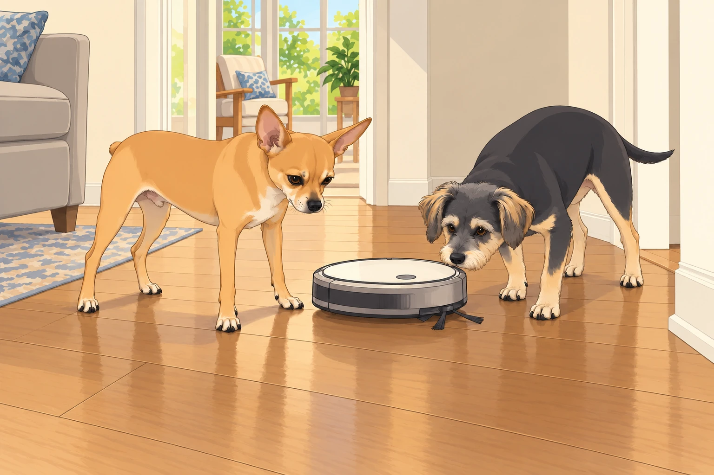
Neet blocked the path like Gandalf.
Neet: “You shall not pass.”
Wall-E, unfazed, rotated thirty degrees and tried again.
Neet rotated exactly thirty degrees to match.
They did this three more times—the dance of the mortal enemies.
Heather stepped around them with the packing foam. Neet let her through, then hurried to close the gap. Wall-E had no respect for visiting hours.
Neet barked directly at its bumper. Wall-E stopped, turned left, and paused. He shifted left to deliver the rest of his warning.
Then it turned right and slipped through the space he had vacated.
A fake left. A hard right. A speed burst—or what felt like one to a commander who had just barked at an empty patch of floor.
The hallway was breached.
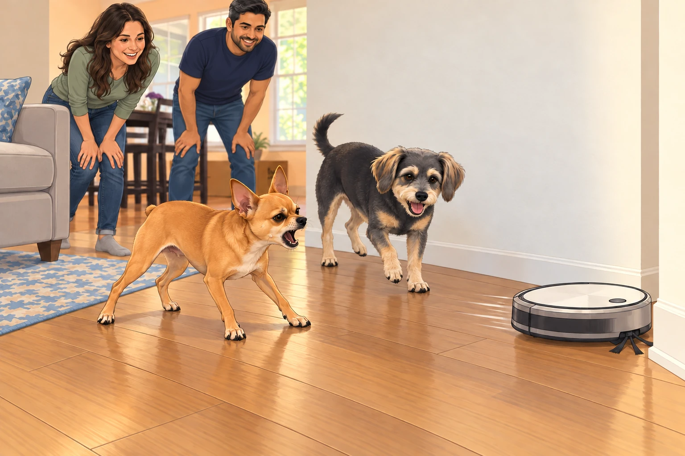
Buddy trotted after it, calling out helpful intel. “It’s going to the bedroom! I think it smells like socks!”
From the couch, Sagar narrated like a wildlife documentary.
“Observe the commander defending the hallway. His colleague appears to be giving the invader a tour.”
Buddy led Wall-E to the bed and presented a slipper. The machine bumped the sole and turned away.
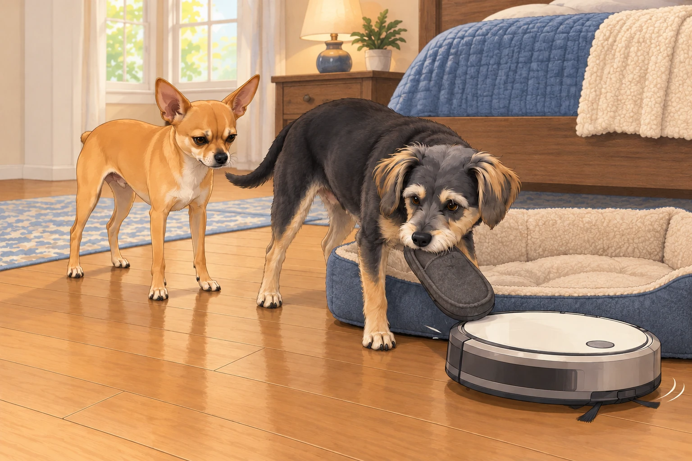
“Not that one? Fair enough.”
He went to fetch the other.
The Second Patrol—Escalation
By the next day, Neet had moved beyond curiosity. This was now war.
He tried Blockade Operations, placing himself at each opening until Wall-E had to reverse. Then came Psychological Warfare: following so closely that his shadow fell across its sensors while it spun awkwardly beneath the table.
Whether the shadow helped was uncertain. Neet made sure to bring it on every mission.
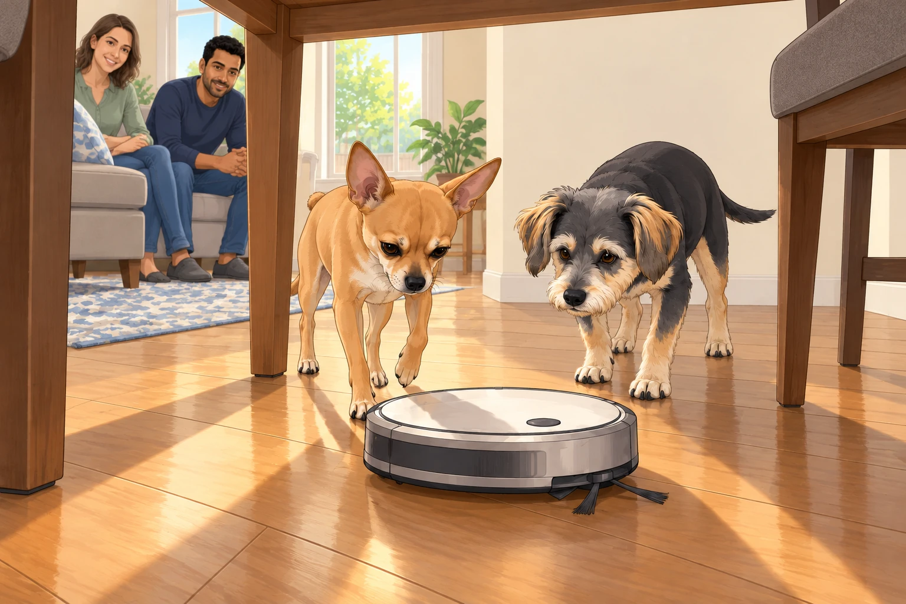
Finally, Counter-Espionage. He stood at the coat-closet entrance, let Wall-E roll inside, then stepped across its exit.
Buddy appeared behind him.
“I need to get past.”
“Restricted area.”
“My bed is past.”
“Then you're restricted too.”
Buddy sat down. Neet remained standing. Wall-E bumped a boot.
Heather found all three waiting in the hallway. She picked up the boot, moved Neet gently aside, and released the prisoner. Buddy hurried through before any new law could be invented.
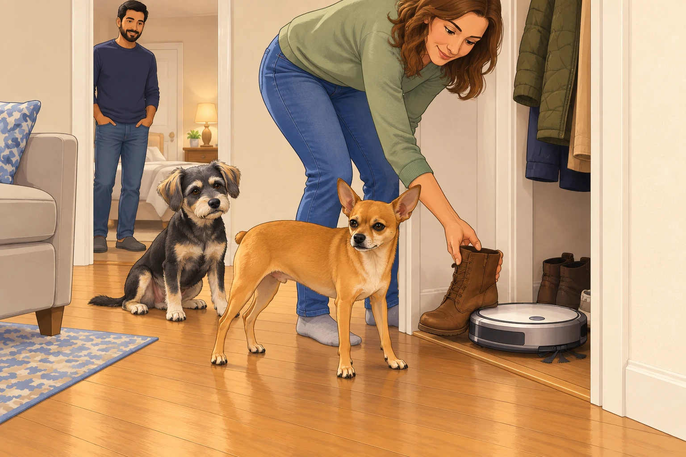
The app reported that the house was taking longer than expected to clean. Sagar looked at Neet. Neet looked pleased to have been mentioned.
Buddy decided the assistant needed encouragement rather than laws.
“You’re doing great, Wall-E! Hey, what’s in your snack drawer?”
No answer. Perhaps it was waiting for him to board.
He placed his front paws on the low lid, tried bringing a back paw forward, and discovered that his assistant was leaving without the rest of him. His attempted carnival ride lasted 0.7 seconds before emergency dismount.
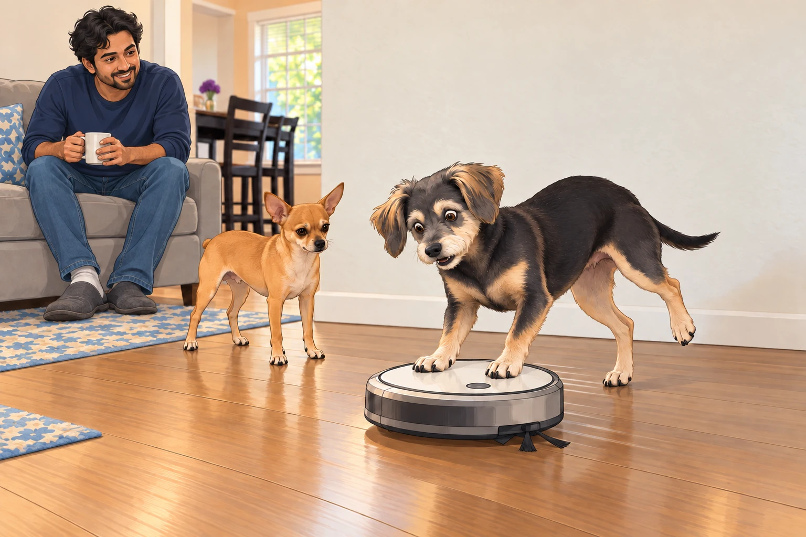
All four paws returned to the floor. He checked that nobody had mistaken this for a failure.
Sagar was looking over his coffee.
“Wrong bus,” Buddy said.
Later, while Heather checked the side brush, Buddy swiped the detached piece and paraded it around like a baton. An assistant should appreciate somebody taking an interest in its work.
Heather retrieved it before the parade reached the kitchen.
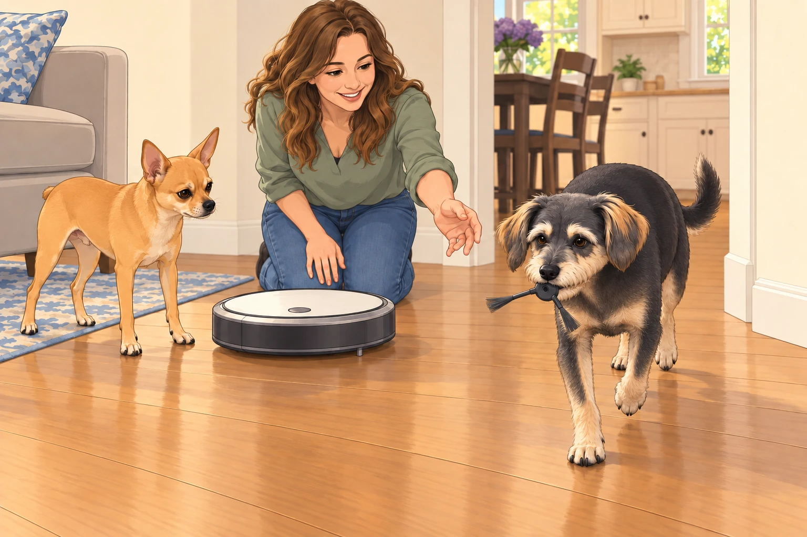
“That's its brush, sweetheart.”
She opened the dust compartment. Buddy leaned in, saw what his new friend had been collecting, and quietly moved behind her.
There were limits to hospitality.
As Heather carried the dust to the bin, Neet inspected the now-paused robot. For once it was behaving beautifully.
Buddy watched Heather move on to a basket of laundry. A gray sock slipped beneath the laundry-room bench. She missed it. Buddy did not.
He started after it, but Neet called him to inspect the dock. Buddy looked back at the sock before following. He knew where to find it later.
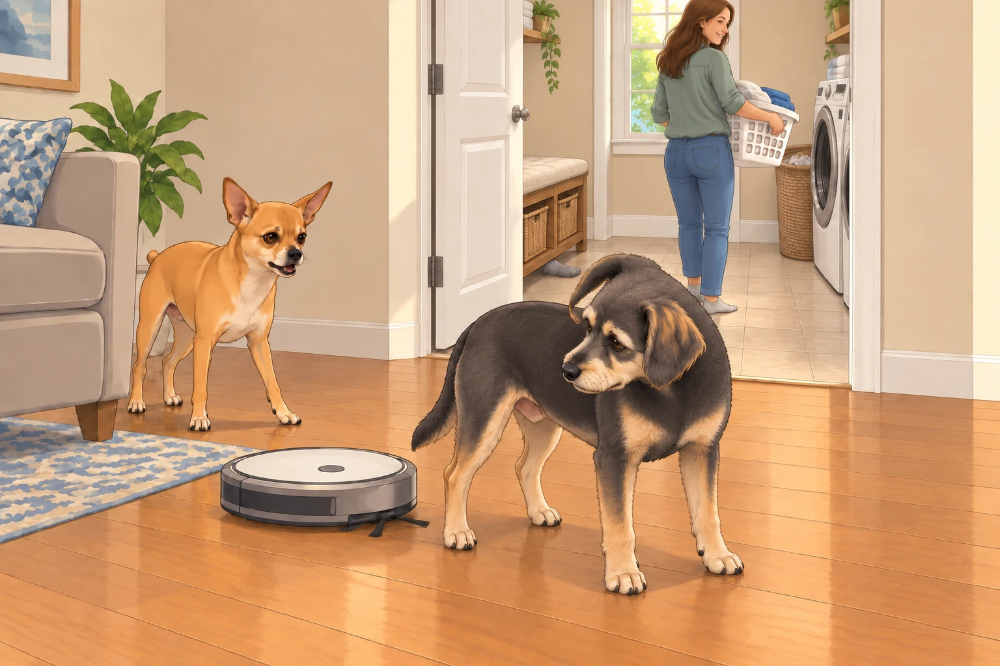
The Night Raid
The turning point came on Tuesday at 3:12 AM.
Heather, experimenting with the app, had scheduled an “overnight quiet run.”
The humans were asleep, the crickets chirped—and then the faint bloop-bloop echoed down the hallway.
Wall-E rolled out of its dock like a cat burglar who had read Sun Tzu.
Neet’s eyes snapped open. Not a sound—just the immediate, controlled rise to all fours.
Buddy stirred: “Bathroom break?”
Neet: “No. Enemy patrol. Follow me.”
Buddy considered staying in bed. Then he remembered the gray sock.
They shadowed the invader, paws soft on the hardwood. At the kitchen threshold, Neet stepped into its path. Wall-E turned toward the laundry room.
Buddy ducked inside first, reached beneath the bench and caught the sock by its toe. The robot entered behind him.
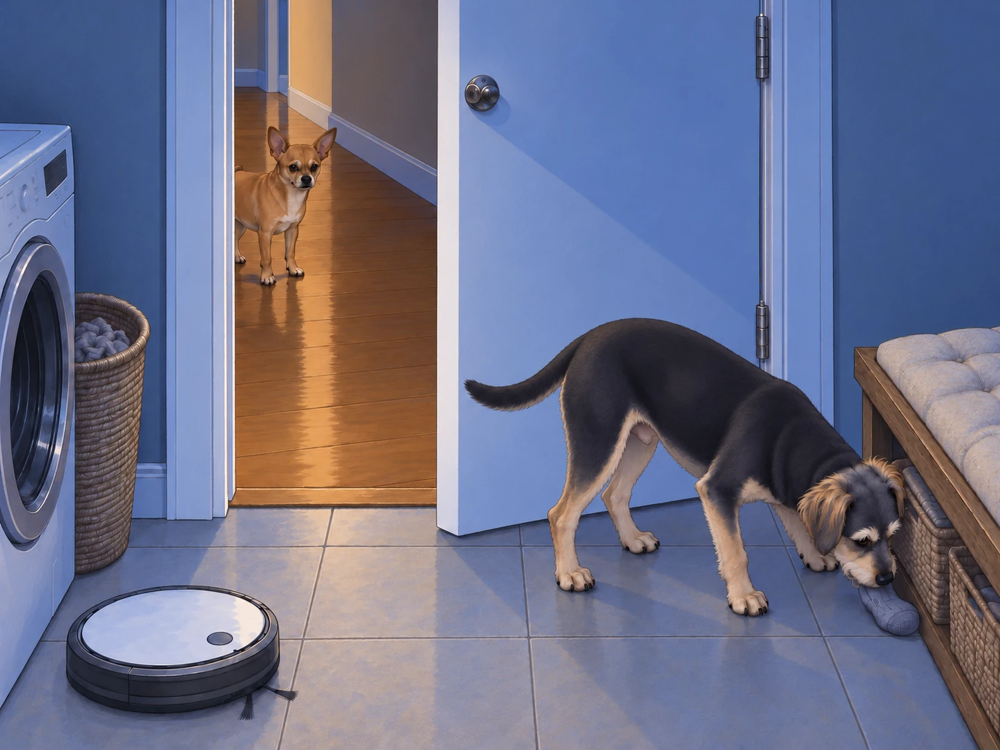
Neet hissed from the doorway. “Withdraw!”
Buddy squeezed through the narrow gap beside the half-open door. His shoulder pushed it shut behind him.
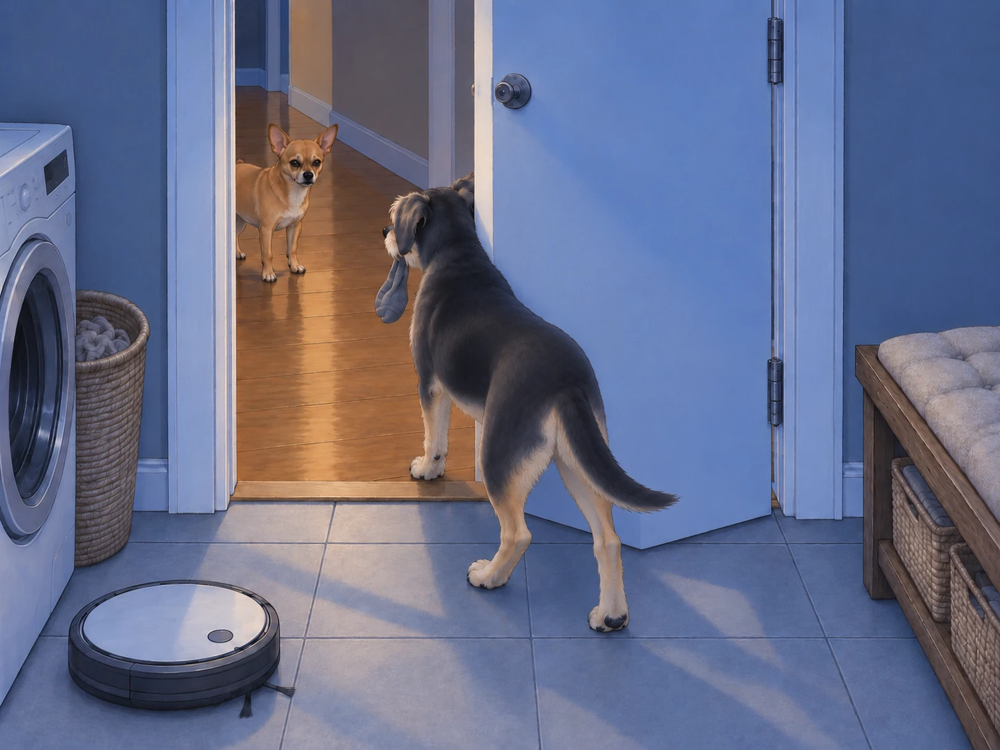
Both dogs froze.
Inside, Wall-E bumped the door, turned, bumped the wall and searched for another route.
Neet inspected the closed door. Then he inspected Buddy.
“Excellent.”
“I was getting my sock.”
“Excellent sock operation.”
Neet settled across the threshold. Buddy settled beside him, the sock safely between his paws. From the room came one final beep.
Buddy lifted his head, worried despite himself.
“Do we need to let it out?”
“In the morning. During visiting hours.”
By morning, Heather opened the laundry room to find Wall-E powered down in the corner, Neet lying across the doorway like a sphinx, and Buddy holding his recovered sock, pleased with an operation that had finally produced something useful.
“It was supposed to clean while everybody slept,” she said.
Neet lifted his chin.
Buddy put the sock down just long enough to yawn, then picked it up again.
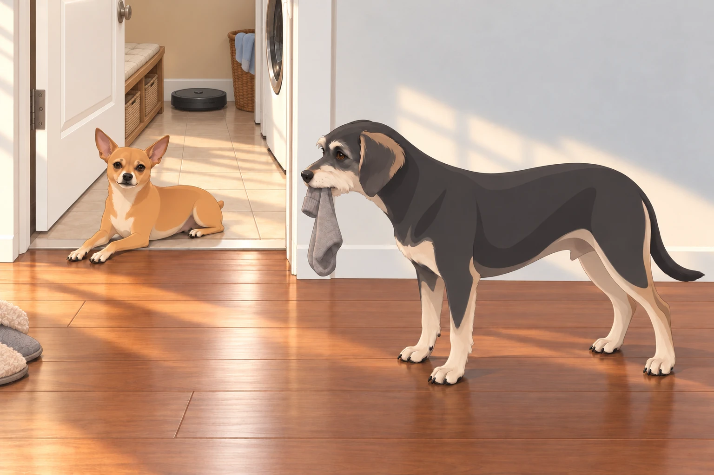
Sagar brought Heather her coffee while she carried Wall-E back to the dock. He glanced at the untouched kitchen floor.
“Successful night?”
“The laundry room is immaculate.”
He looked at the two exhausted guards.
“Very thorough supervision.”
Heather smiled, but switched off the overnight schedule. Neet watched her thumb move. At last somebody had adjusted the machine's visiting hours.
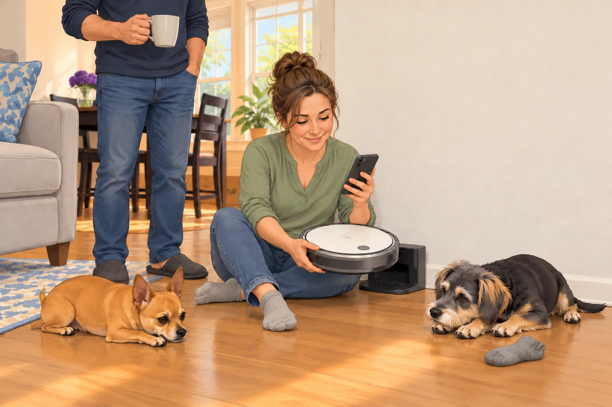
The Day of the Great Chase
Heather still insisted Wall-E could “integrate” with the household.
On Thursday, she unleashed it during awake hours.
Buddy had received a biscuit after their walk. He carried it to the rug to finish at leisure, leaving a few crumbs behind.
Wall-E followed the trail.
Buddy brightened. It had remembered him.
He sprinted ahead to lead the way, zig-zagging through the living room. Wall-E reached the rug, turned along its edge and headed toward him again.
Buddy tried a second route. The biscuit broke in his mouth; he stopped to retrieve the larger piece. Wall-E approached the smaller pieces.
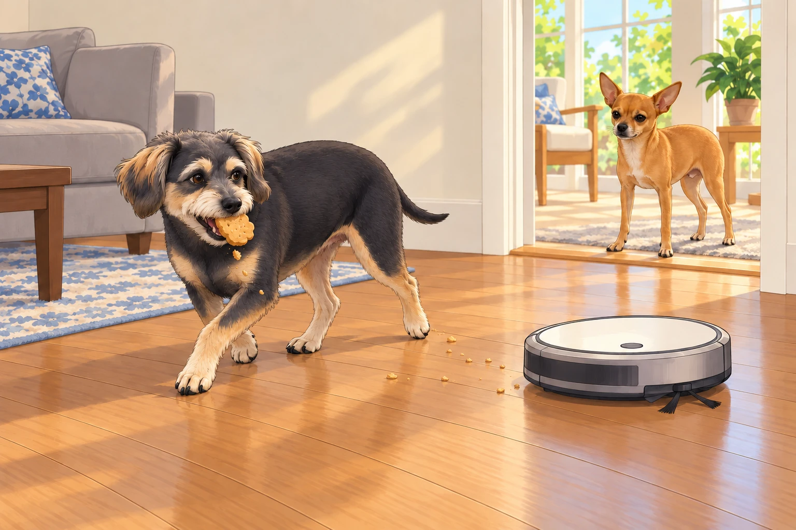
“Wait, I haven't finished the tour.”
Neet cut in twice to block its approach to the sunroom.
“Not the meditation zone.”
On the third approach he herded Buddy toward the couch. Buddy hopped up, biscuit still in his mouth.
Buddy: “But I think it likes me!”
Neet: “It likes your crumb trail.”
Buddy looked back. Wall-E had stopped following him to work on a patch beneath the table.
He waited. Then he looked at Neet, wounded.
Buddy: “I showed it the bedroom.”
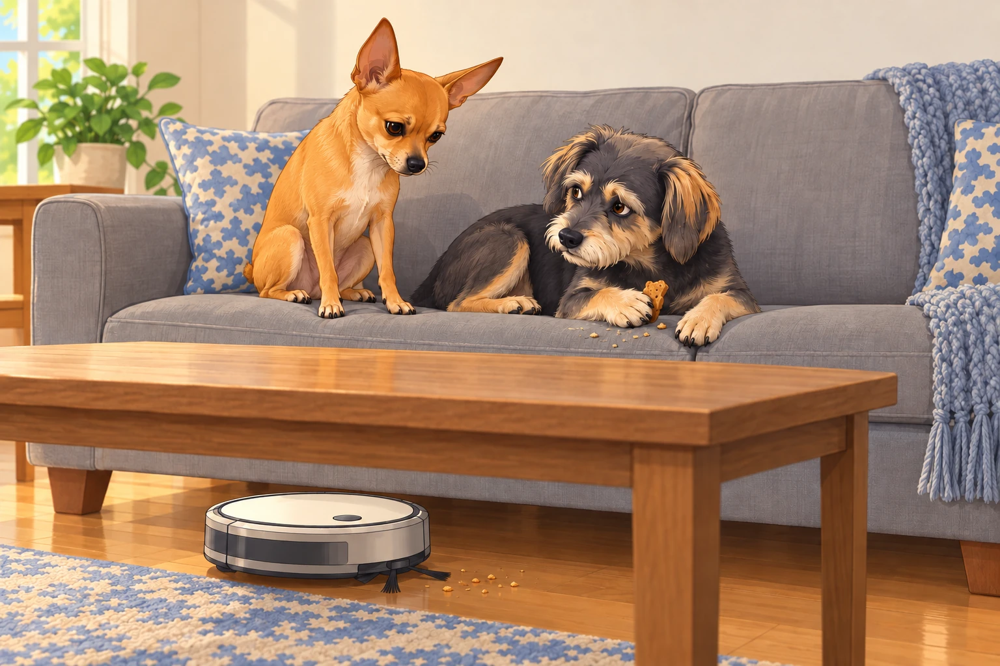
Neet sat beside him. Below them, the robot made its careful turns. Buddy finished his biscuit. Neet watched every crumb that fell.
For a moment they were both quiet.
Then Heather knelt to clear the rug's curled corner. Wall-E turned back toward the couch, and Neet jumped down to cut it off.
Heather pressed pause before he reached it.
Neet stopped too.
He looked at her thumb, then at the motionless robot.
“Buddy.”
“I saw.”
This required a meeting.
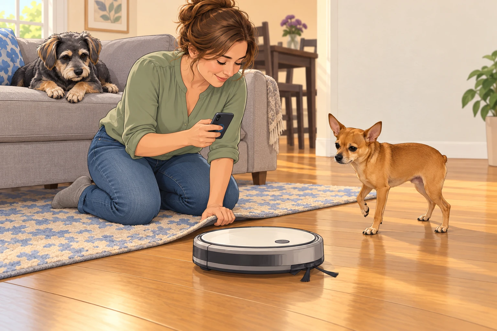
The Treaty of Tuesday, Finally Ratified
Sagar, recognizing the escalation curve, convened a family meeting.
Over chai and leftover pav bhaji, the Treaty of Tuesday was drafted. Thursday had produced the meeting; Tuesday had produced the grievance. Neet saw no reason to reward Thursday.
Sagar sat at the table with Heather beside him. She slid his cup away from the edge while he moved her chair enough to make room for Buddy underneath.
The terms were simple.
Wall-E could patrol during post-walk naps or backyard play sessions. There would be no overnight runs.
When Neet blocked the path, a human would pause the machine and help him settle before cleaning continued.
Buddy could have supervised escort duty twice weekly, with zero chewing privileges.
Buddy nudged Sagar’s knee at the last clause. Sagar kept reading. Buddy tried Heather’s knee. She pointed at the reattached side brush.
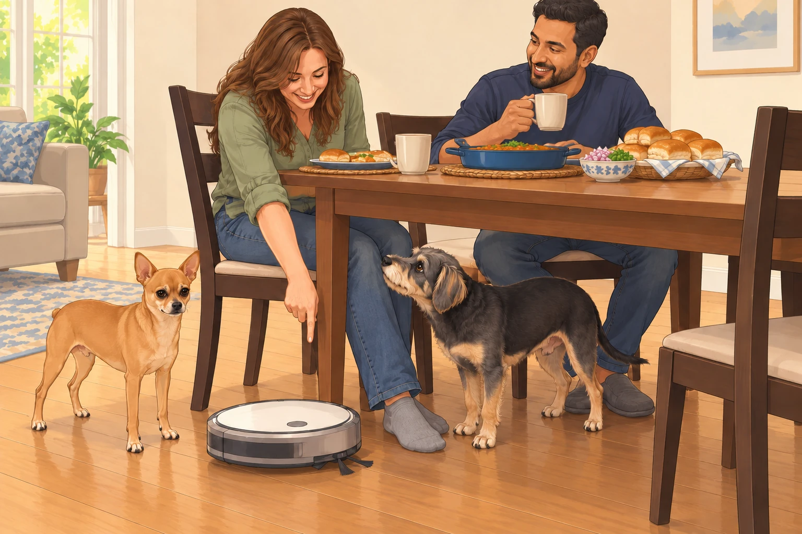
Heather, skeptical: “So… the dogs are basically in charge of the robot vacuum?”
Sagar, sipping chai: “Better than the alternative, which was them decommissioning it entirely.”
Neet signed the treaty with a dignified head tilt.
But a treaty needed testing.
Heather started Wall-E. Neet stepped forward. She pressed pause. Wall-E stopped.
Neet glanced at Sagar to make sure this part had been witnessed.
Then Sagar patted the blanket beside his chair. Neet hesitated. The kitchen was still vulnerable.
Buddy fetched his gray sock and put it on the blanket. He settled beside it, leaving space for Neet.
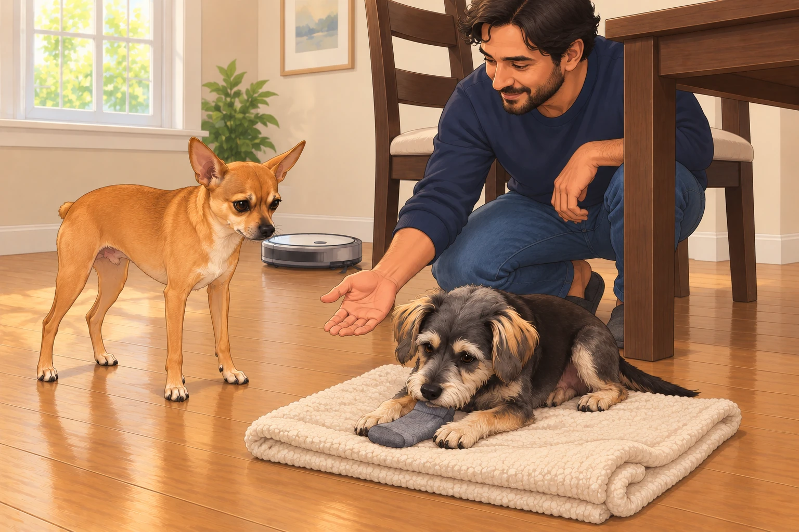
“Come on. It doesn't even have snacks.”
Neet checked the stopped machine once more, then joined him. Heather resumed the run. This time Buddy watched Wall-E pass without getting up to offer it anything.
Neet's ears followed it across the room. Sagar rested a hand along his back. Slowly, the commander lowered his chin.
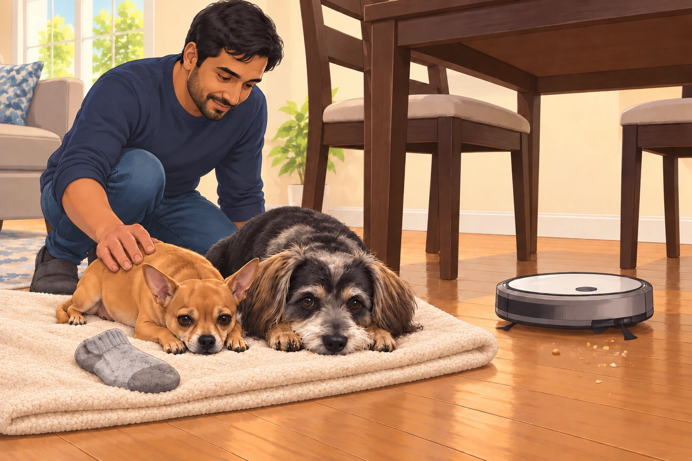
Wall-E collected the crumbs beneath the table. Nothing had invaded the blanket. Nobody had lost a sock.
Heather paused it beside Sagar's chair before sending it back to its dock. Buddy got up for one final inspection. Neet followed, looking up at Sagar while Buddy licked Wall-E’s bumper and whispered:
“One day, you and me — snack heist.”
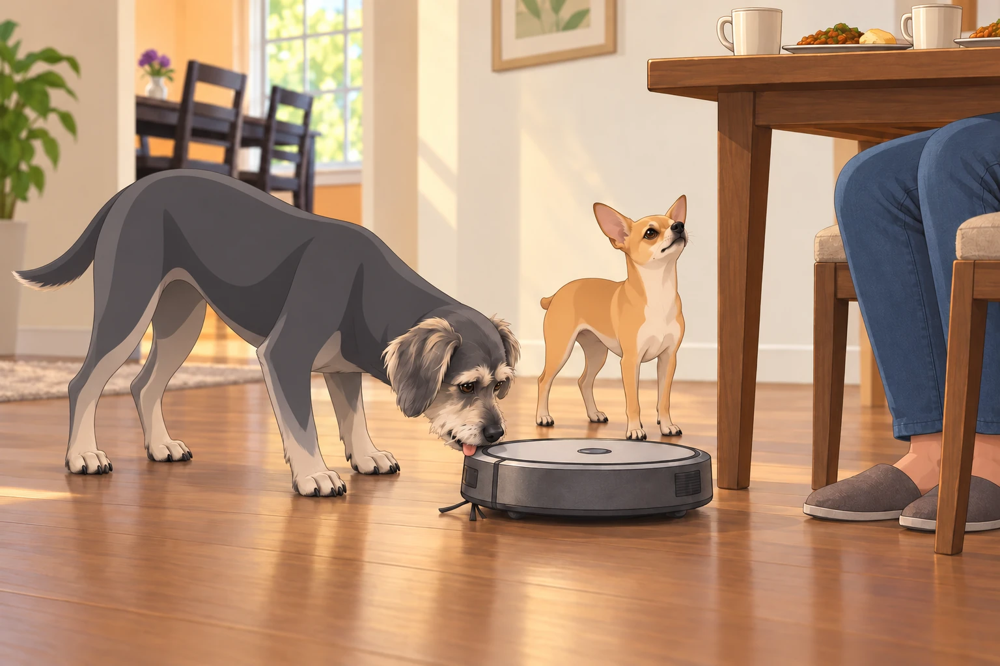